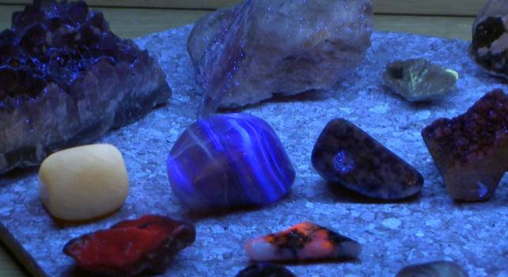

På billedet ses blandt andet rød rubin, tugtupit, fluorit, honning calcit, sodalit og blå apatit. Andre fluorescerende sten er calcedon, vandmelons turmalin og cobolt-calcit.
Stenene er belyst med ultraviolet lys fra »Black Light Blue« fra Philips type TLD18 W.